Manual
Manual do AURA Synth Bass
Do primeiro som ao palco. Versão 1.0
1 · Bem-vindo ao AURA
AURA Synth Bass é um sintetizador de baixo para tocar ao vivo, criado por Thiago R. Galvão. Ele roda no navegador (iPad, tablet Android, Mac ou PC), funciona sem internet depois de instalado e também existe como plugin VST3/AU para o Reaper e outras DAWs.
O painel foi desenhado como um instrumento de verdade: madeira nas laterais, painel escuro com serigrafia branca, knobs de metal e um visor luminoso.
O que você precisa
- Um aparelho com navegador moderno (Safari, Chrome ou Edge) e fones ou caixa de som.
- Opcional: um teclado controlador MIDI (por exemplo M-Vave SMK-25) por USB ou Bluetooth. Sem ele, toque nas teclas da tela.
O que o AURA oferece
| Recurso | Descrição |
|---|---|
| 3 osciladores + sub + ruído | Base do timbre: grave encorpado, ataque cortante ou sons de lead |
| Filtro de 24 dB | Escurece ou abre o som, com ressonância e drive |
| Envelopes e LFO | Dão movimento: ataque, decaimento, vibrato, wah |
| 2 efeitos + delay + reverb | Distorção, fuzz, chorus, phaser, ecos e ambiente |
| Arpejador | Toca as notas em sequência, sincronizado ao BPM |
| Presets, favoritos e setlist | Guarde, organize e leve seus sons entre aparelhos |
| MIDI completo | Mapeie qualquer botão do controlador a qualquer knob |
| Modo ao vivo | Pânico, cadeado, tela cheia, modo leve e preset de emergência |
Painel grafite · madeira escura · serigrafia branca · laranja nos detalhes · visor ciano · LEDs de status
2 · Conceitos básicos de síntese
Se você nunca usou um sintetizador, leia esta página: ela explica as ideias que aparecem no resto do manual.
O caminho do som no AURA: as fontes são misturadas, passam pelo filtro e pelo volume, e depois pelos efeitos até a saída.
Oscilador
É a fonte do som: gera uma onda que se repete na frequência da nota. A forma da onda muda o timbre.
Filtro
Corta os agudos acima da frequência de cutoff. Cutoff baixo = som escuro e “abafado”; alto = brilhante. A ressonância realça a região do corte.
Envelope
Descreve como algo muda desde o momento em que você aperta a tecla até soltá-la. No AURA há um para o volume e outro para o filtro.
LFO
“Oscilador de baixa frequência”: uma onda lenta que balança outro parâmetro. Balançando a afinação dá vibrato; balançando o filtro dá wah.
Preset
Um som salvo com todos os ajustes dos knobs.
MIDI
Linguagem que teclados enviam: notas, intensidade do toque, rodas e botões. O AURA entende MIDI por USB e Bluetooth.
Polifonia
O AURA é um baixo monofônico: toca uma nota por vez. Se você segura duas teclas, a regra de “Prioridade de nota” decide qual soa.
3 · Primeiros passos
Passo 1 — Abra e instale
- Abra o endereço do AURA no navegador e toque uma vez na tela para liberar o áudio. O LED POWER acende em verde.
- iPad / iPhone (Safari): Compartilhar → Adicionar à Tela de Início.
- Android (Chrome): menu ⋮ → Instalar app. Mac/PC: ícone de instalação na barra de endereço.
- Depois de aberto uma vez, o app funciona offline.
Passo 2 — Toque
- Toque nas teclas da tela. Se não ouvir nada, confira o volume do aparelho e o knob VOLUME (canto direito do painel).
- O LED GATE acende enquanto uma nota soa.
Passo 3 — Conecte o teclado MIDI (opcional)
- USB: ligue o cabo e abra Ajustes → USB / MIDI do sistema. No Chrome aceite a permissão de MIDI. O LED MIDI acende quando chegam notas.
- Bluetooth: ligue o teclado em modo de pareamento e use Ajustes → Bluetooth. Funciona em navegadores com Web Bluetooth: Chrome no Android (celular e tablet), Chrome e Edge no computador. No iPhone e iPad o Safari não tem Bluetooth MIDI; abra o endereço do AURA no app gratuito Bluefy.
- Sem som no iPhone? Desligue a chave lateral de silêncio, suba o volume e toque numa tecla. O AURA liga o áudio no primeiro toque.
- Se o visor exibir “MIDI: permissão negada”, libere o MIDI nas permissões do site e recarregue.
Passo 4 — Escolha um som
- Use as setas ◀ ▶ do cabeçalho ou toque no visor para abrir a lista.
- Experimente girar o CUTOFF enquanto toca: é o controle que mais muda o timbre.
4 · Instalação e ativação
Windows
- Baixe AURA-Synth-Bass-Windows.exe em fervor.website/plugins/aurasynthbass e abra o arquivo.
- Se aparecer “O Windows protegeu seu computador”, toque em Mais informações → Executar assim mesmo.
- Aceite o contrato, escolha a pasta e conclua. O instalador coloca o programa no menu Iniciar e o plugin VST3 em C:\Program Files\Common Files\VST3.
Mac
- Baixe AURA-Synth-Bass-macOS.pkg e abra. Se o Mac bloquear, clique com o botão direito no arquivo → Abrir; ou vá em Ajustes do Sistema → Privacidade e Segurança → Abrir mesmo assim.
- Em “Personalizar”, escolha os componentes: Aplicativo, VST3 e Audio Unit (AU).
- O app fica em Aplicativos; funciona em Macs Intel e Apple Silicon.
Teste grátis de 15 dias
Na primeira abertura o AURA funciona por 15 dias com todos os recursos. No canto inferior direito aparece o selo TESTE GRÁTIS · N DIAS.
Ativar com a chave
- Depois da compra você recebe por e-mail uma chave de ativação.
- Toque no selo (ou espere a tela de ativação aparecer ao fim do teste), cole a chave e toque ATIVAR. É preciso internet nesse momento.
- O selo passa a mostrar LICENCIADO.
Até 3 aparelhos
A mesma chave vale para 3 aparelhos seus. Para mudar de computador, abra o AURA no aparelho antigo, toque no selo e escolha DESATIVAR ESTE APARELHO; a vaga volta e você ativa no novo. Se o limite foi atingido, a tela avisa. Não compartilhe a chave com outras pessoas: chaves usadas acima do limite podem ser bloqueadas.
| Situação | O que acontece |
|---|---|
| Sem internet | O AURA continua funcionando por até 30 dias sem precisar confirmar a licença |
| Passou de 30 dias offline | Pede para conectar uma vez e revalidar |
| Compra reembolsada | A licença é desativada na próxima confirmação |
| Data do computador alterada | O AURA bloqueia até a data ser corrigida |
5 · Visão geral do painel
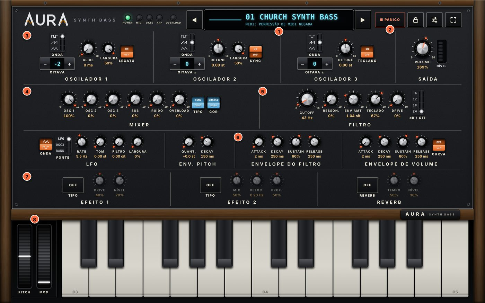
- Visor — nome do preset e mensagens. Toque para abrir a lista.
- Pânico — silencia tudo.
- Osciladores — as três vozes: onda, oitava, afinação.
- Mixer — quanto de cada fonte entra no filtro.
- Filtro — brilho, ressonância, envelope e drive.
- Envelopes e LFO — movimento do som no tempo.
- Efeitos — dois efeitos e reverb.
- Pitch e Mod — rodas de expressão à esquerda do teclado.
- Teclado — toque direto na tela.
6 · Cabeçalho e visor
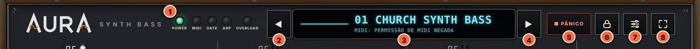
- LEDs de status — POWER (áudio ligado), MIDI (chegada de dados), GATE (nota soando), ARP (arpejador ligado), OVERLOAD (sinal saturando).
- ◀ preset anterior.
- Visor — nome do preset; mensagens temporárias (“Toque em um knob…”, alertas de MIDI).
- ▶ próximo preset.
- PÂNICO — corta todas as notas e efeitos presos. Também responde ao CC 123 do controlador.
- Cadeado — trava os controles da tela contra toques acidentais. Toque de novo para destravar.
- Ajustes — abre o menu completo (capítulo 13).
- Tela cheia — “modo tocar”: esconde as barras do navegador.
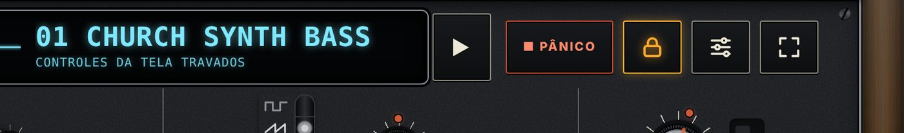
Quando usar o cadeado
Em palco, ao segurar o tablet com a mão ou ao apoiar o dedo na tela. As teclas continuam tocando; só os controles do painel ficam travados.
7 · Osciladores e saída
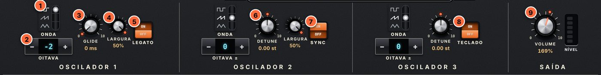
- ONDA — quadrada, serra ou triângulo (chave vertical).
- OITAVA − / + — sobe/desce o oscilador em oitavas.
- GLIDE (Osc 1) — tempo de deslize entre notas.
- LARGURA — largura de pulso da onda quadrada: muda o “corpo” do timbre.
- LEGATO — ON: notas ligadas não retocam o envelope.
- DETUNE (Osc 2 e 3) — desafina em semitons. Pequenos valores engrossam o som.
- SYNC (Osc 2) — sincroniza o Osc 2 ao Osc 1 para timbres agressivos.
- TECLADO (Osc 3) — ON: segue as notas; OFF: frequência fixa.
- VOLUME — nível geral de saída.
8 · Mixer e filtro
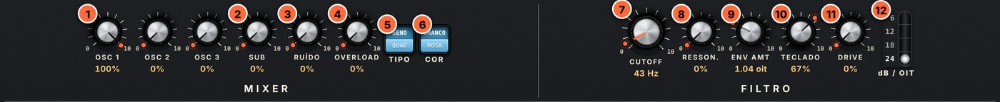
- OSC 1 — nível do oscilador 1 (Osc 2 e Osc 3 ao lado).
- SUB — oscilador extra uma oitava abaixo, para peso.
- RUÍDO — ruído branco/rosa (percussão, sopro).
- OVERLOAD — satura a mistura antes do filtro.
- TIPO — forma do sub: seno ou quadrada.
- COR — ruído branco (brilhante) ou rosa (mais escuro).
- CUTOFF — frequência de corte: o principal controle de brilho.
- RESSON. — realça a frequência de corte; valores altos “assobiam”.
- ENV AMT — quanto o envelope do filtro abre o corte a cada nota.
- TECLADO — faz o filtro acompanhar a nota (notas agudas ficam mais brilhantes).
- DRIVE — saturação dentro do filtro.
- dB / OIT — inclinação do filtro: 6, 12, 18 ou 24 dB por oitava (mais dB = corte mais firme).
9 · LFO e envelopes
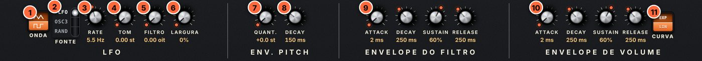
- ONDA do LFO (triangular ou quadrada).
- FONTE — o que alimenta a modulação: LFO, OSC 3 ou aleatório (RAND).
- RATE — velocidade do LFO.
- TOM — quanto o LFO balança a afinação (vibrato).
- FILTRO — quanto balança o cutoff (wah).
- LARGURA — quanto balança a largura de pulso.
- QUANT. (Env. Pitch) — quanto a afinação sobe/cai no início da nota.
- DECAY (Env. Pitch) — duração dessa variação.
- Envelope do filtro — ATTACK, DECAY, SUSTAIN, RELEASE do brilho.
- Envelope de volume — os mesmos quatro estágios para o volume.
- CURVA — EXP (natural) ou LIN (linear) para o volume.
Attack: tempo até o pico. Decay: queda até o sustain. Sustain: nível enquanto a tecla segue pressionada. Release: tempo de apagar depois de soltar.
10 · Efeitos e reverb
- Efeito 1 — TIPO: desligado, distorção, fuzz ou bitcrusher.
- DRIVE / NÍVEL do Efeito 1.
- Efeito 2 — TIPO: chorus, flanger, phaser ou anel (ring).
- MIX / VELOC. / PROF. do Efeito 2: quanto entra, velocidade e profundidade.
- REVERB — liga/desliga.
- TEMPO / NÍVEL do reverb.
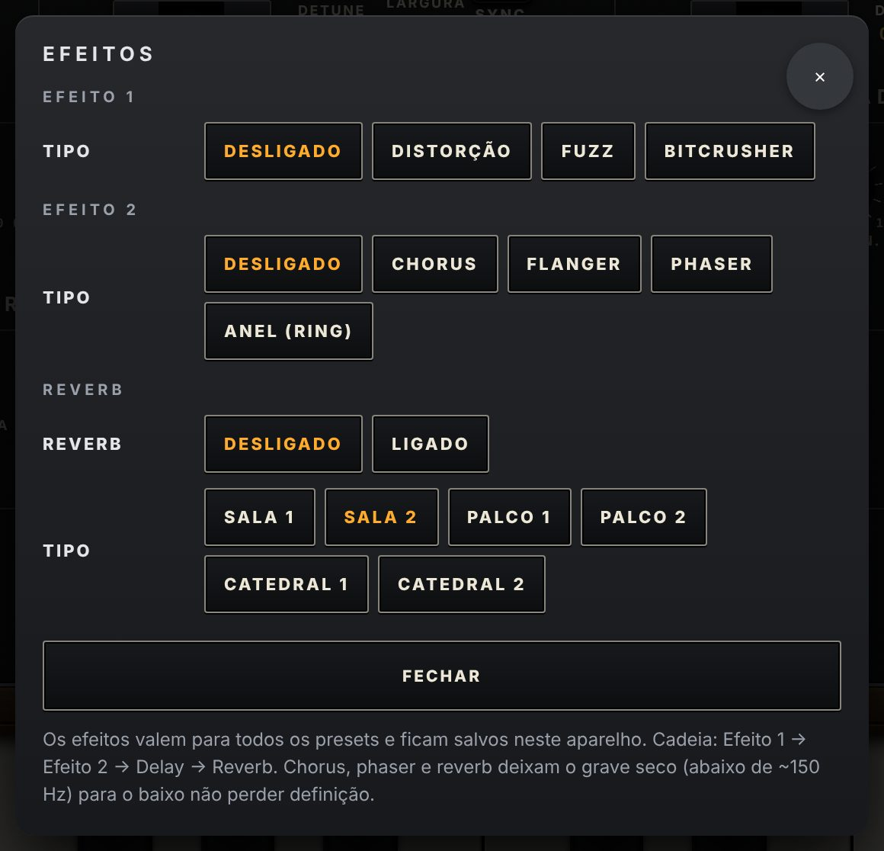
Os efeitos são globais: valem para todos os presets e ficam salvos no aparelho. O Delay tem tela própria (capítulo 13.2).
Reverb: Sala 1/2, Palco 1/2 e Catedral 1/2.
11 · Teclado e rodas
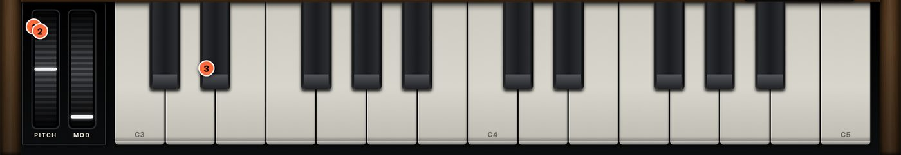
- PITCH — pitch bend: sobe até +2 semitons e desce até −12 (faixas ajustáveis em Avançado). Volta ao centro ao soltar.
- MOD — roda de modulação (CC 1): adiciona vibrato.
- Teclas — toque ou deslize. Os rótulos C3, C4 e C5 mostram as oitavas.
Controles que o AURA entende por MIDI
| Mensagem | Efeito |
|---|---|
| Notas | Tocam o baixo; a intensidade (velocity) age conforme “Força da tecla” e “Sensibilidade” |
| Pitch bend | Sobe/desce a afinação |
| CC 1 (mod) | Vibrato |
| CC 64 (pedal) | Sustain: segura as notas enquanto pressionado |
| CC 123 | Pânico: silencia tudo |
| Aftertouch | Vibrato, filtro ou volume (veja Ajustes → Aftertouch) |
| Program Change | Troca de preset (ou item da setlist, se ligada) |
| Knobs e botões | Qualquer um pode ser mapeado (capítulo 14) |
12 · Presets
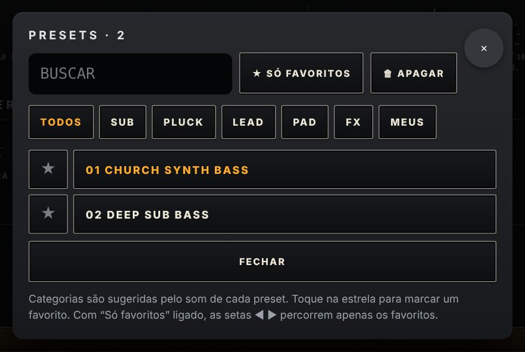
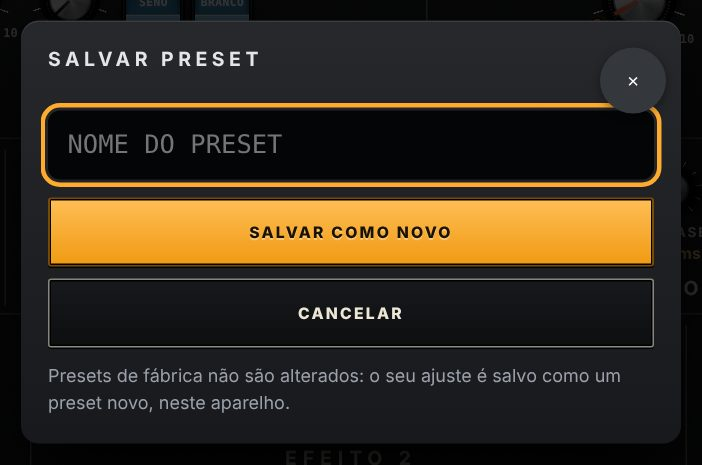
Escolher
- Toque no visor para abrir a lista; toque num nome para carregar.
- Filtre por categoria: TODOS, SUB, PLUCK, LEAD, PAD, FX, MEUS. As categorias são sugeridas pelo som de cada preset.
- Marque favoritos com ★. Com “Só favoritos” ligado, as setas ◀ ▶ percorrem apenas os favoritos.
- Apagar remove só os seus presets listados.
Os timbres de fábrica
- Vêm 33 timbres de fábrica, todos com nomes no padrão Família (Variação): Church Synth Bass e Deep Sub Bass; Sub — Sub Bass, Sub Bass (Soft), (Hard) e (808); Drive — Drive, Drive (Soft), (Heavy) e (Stage 2); Octave — Octave (Clean), (Wild), (Soft) e (Hard); Funk — Funk (Pluck) e Funk (Slap); Pop (Round) e Rock (Grit); Lead — Lead (Mono) e (Soft); Pluck — Pluck (Short) e (Warm); Chorus — Chorus e Chorus (Wide); e a família de baixos de sintetizador: Sub, Sub Agro, Sub Arp, Sub Agro Arp, HRD Pluck, Duo-Glide, Angry Drop, Bad!Bass e $24$.
- Sub Arp e Sub Agro Arp ligam o arpejador ao serem escolhidos (semicolcheias, 100 e 125 BPM) e o desligam quando você troca para outro preset. Dá para ajustar o padrão e o andamento em Ajustes → Arpejador. No plugin VST3/AU eles também ligam o arpejador do plugin (no Sub Arp e no Sub Agro Arp) e o desligam ao trocar de preset.
- Nos três de oitava o SUB soa uma oitava abaixo da nota; nos outros ele reforça a própria nota, dando corpo.
- Alguns deles trazem os próprios efeitos: escolher o Chorus liga o chorus, escolher o Drive (Stage 2) troca para a distorção. Presets que não trazem efeito nenhum deixam como está o que você tinha ligado.
Salvar
- Ajustes → Salvar preset, digite o nome e escolha Salvar como novo, Substituir ou Excluir.
- Presets de fábrica não são alterados: o seu ajuste vira um preset novo, guardado neste aparelho (e na nuvem, se você entrou na conta).
Trazer e levar sons
- Importar: arquivos .json (backup do AURA) e os formatos .syx e .mdp.
- Exportar backup: gera um .json com os seus presets — útil para trocar de aparelho ou usar no plugin. Recurso da licença ativa: no período de teste fica bloqueado.
13 · Menu Ajustes — visão geral
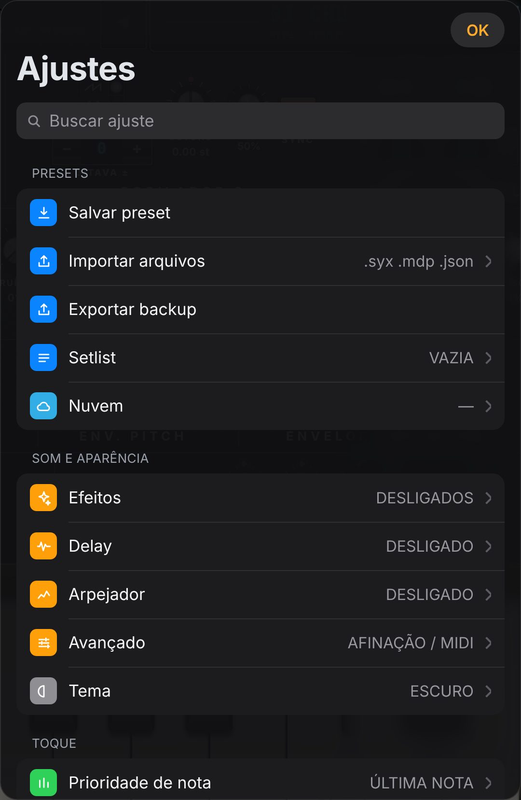
Toque no botão de sliders no cabeçalho. O menu reúne tudo o que não precisa ficar no painel e está dividido em cinco grupos:
| Grupo | Para que serve |
|---|---|
| Presets | Salvar, importar, exportar, setlist e nuvem |
| Som e aparência | Efeitos, delay, arpejador, avançado e tema |
| Toque | Como as teclas e o controlador respondem |
| Ao vivo | Segurança no palco |
| Controlador | Conexão MIDI e mapeamento |
Buscar ajuste
O campo no topo filtra as linhas conforme você digita: escreva “delay” e só o que combina aparece.
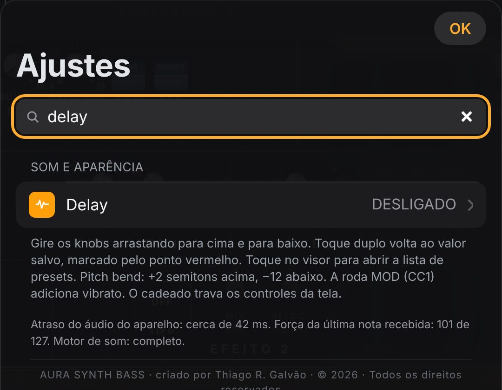
À direita de cada linha o menu mostra o estado atual (por exemplo ÚLTIMA NOTA, DESLIGADO). Toque na linha para mudar ou abrir uma tela.
Toque em OK para fechar.
13.1 · Grupo Presets
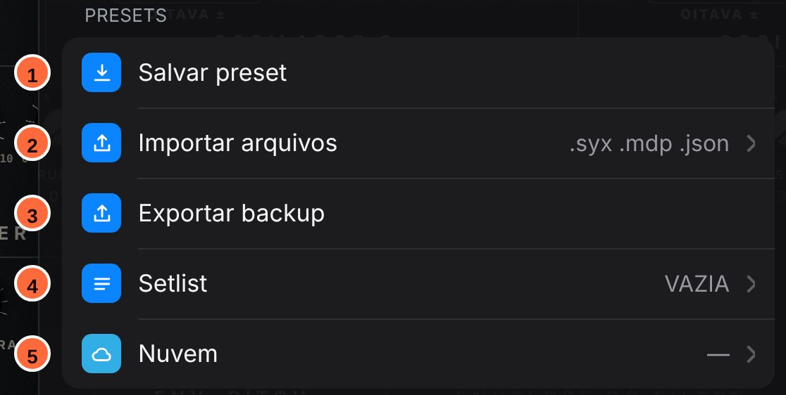
| # | Linha | O que faz |
|---|---|---|
| 1 | Salvar preset | Abre a tela de salvar: como novo, substituir ou excluir. |
| 2 | Importar arquivos | Lê arquivos .json (backup AURA) e os formatos .syx e .mdp de outros sintetizadores compatíveis. Pode escolher vários de uma vez. |
| 3 | Exportar backup | Baixa um arquivo .json com todos os seus presets. Guarde-o em local seguro. Disponível só com licença ativa (bloqueado no teste). |
| 3b | Exportar .syx / Exportar .mdp | Baixa um .zip com todos os presets (de fábrica e seus) em arquivos .syx (Moog Sub Phatty) ou .mdp (Minimoog Model D para iPad). É uma aproximação: efeitos, arpejo e LFO 2 não existem nesses formatos, e o .mdp troca o sub-oscilador por um oscilador 3 uma oitava abaixo. Só com licença ativa. |
| 3b | Exportar .syx · Exportar .mdp | Baixam um .zip com todos os presets de fábrica e os seus, em formato .syx (Sub Phatty) ou .mdp (Minimoog Model D para iPad), um arquivo por preset. É uma aproximação: efeitos, arpejo e LFO 2 ficam de fora, e no .mdp o sub vira o oscilador 3. Disponível só com licença ativa (bloqueado no teste e na demonstração). |
| 4 | Setlist | Lista ordenada para o palco. Mostra VAZIA ou quantos itens. |
| 5 | Nuvem | Entra com e-mail e senha para sincronizar seus presets entre aparelhos. Mostra CONECTADO / DESCONECTADO. |
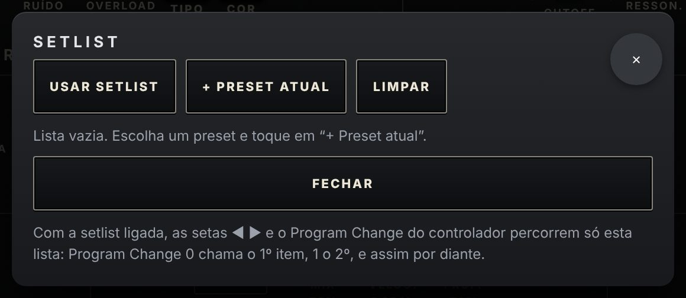
Setlist
- Escolha um preset e toque em + Preset atual; repita na ordem do show.
- Ligue Usar setlist.
- Agora as setas ◀ ▶ e o Program Change do controlador percorrem só essa lista: PC 0 chama o 1º item, PC 1 o 2º, e assim por diante.
- Limpar esvazia a lista.
Nuvem
Seus presets salvos são gravados na nuvem e aparecem em todos os aparelhos em que você entrar. Sem internet, o app continua funcionando com a cópia local.
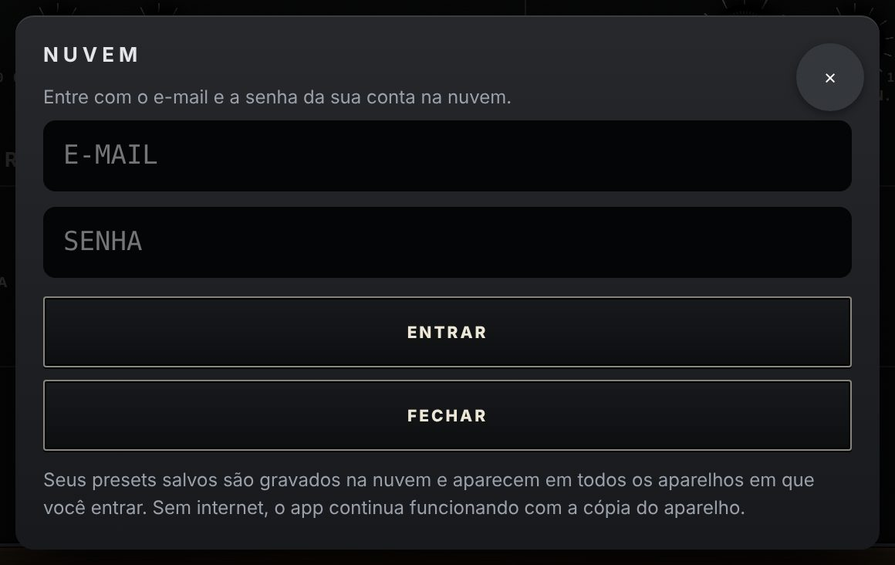
13.2 · Grupo Som e aparência
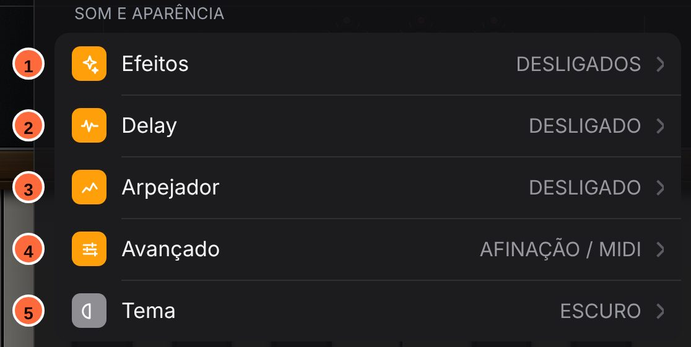
| # | Linha | O que faz |
|---|---|---|
| 1 | Efeitos | Tela com Efeito 1, Efeito 2 e Reverb (veja abaixo). |
| 2 | Delay | Eco: tempo, repetições e mix. |
| 3 | Arpejador | Toca as notas seguradas em sequência. |
| 4 | Avançado | Modulação extra, ondas, afinação, faixa das rodas, entrada externa e canal MIDI. |
| 5 | Tema | Alterna entre ESCURO e CLARO a cada toque. |
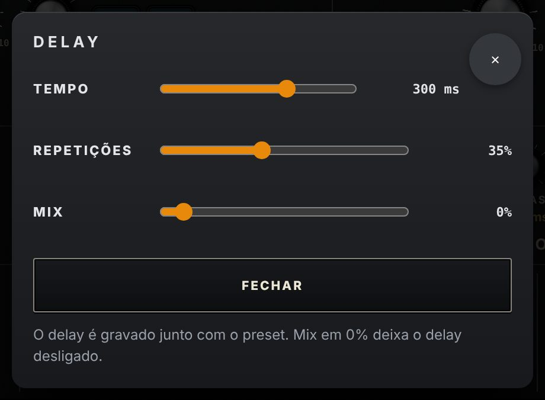
TEMPO em ms entre ecos; REPETIÇÕES quantas vezes repete; MIX quanto do eco se mistura. Mix em 0% = delay desligado. O delay é gravado junto com cada preset.
13.2 · Arpejador e Tema
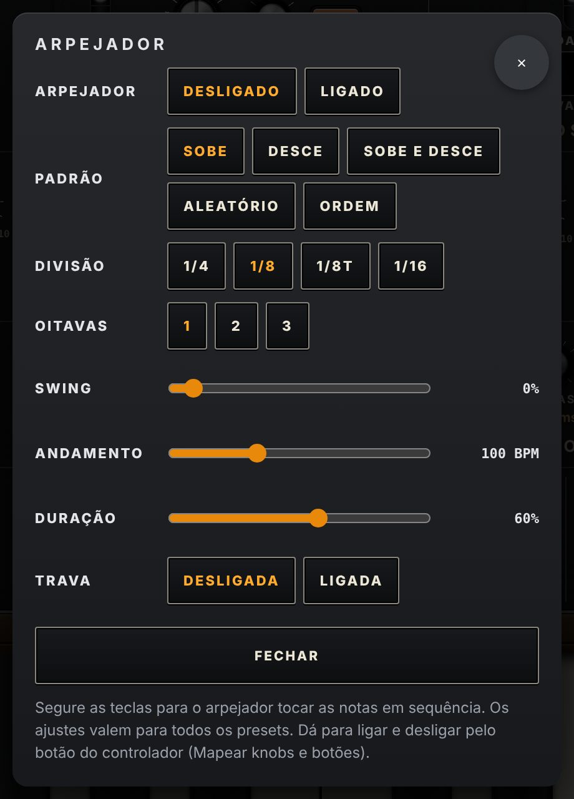
Arpejador
Segure uma ou mais teclas e o AURA toca as notas em sequência.
| Opção | Função |
|---|---|
| Arpejador | Liga/desliga (LED ARP acende) |
| Padrão | Sobe, Desce, Sobe e Desce, Aleatório, Ordem (a ordem em que você tocou) |
| Divisão | 1/4, 1/8, 1/8T (tercina), 1/16 |
| Oitavas | 1, 2 ou 3 oitavas de extensão |
| Swing | Atrasa as notas pares para dar balanço |
| Andamento | Velocidade em BPM |
| Duração | Comprimento de cada nota |
| Trava | LIGADA: o arpejo continua sem segurar as teclas |
Os ajustes valem para todos os presets. Dá para ligar/desligar pelo botão ARP do controlador (mapeado).
Tema
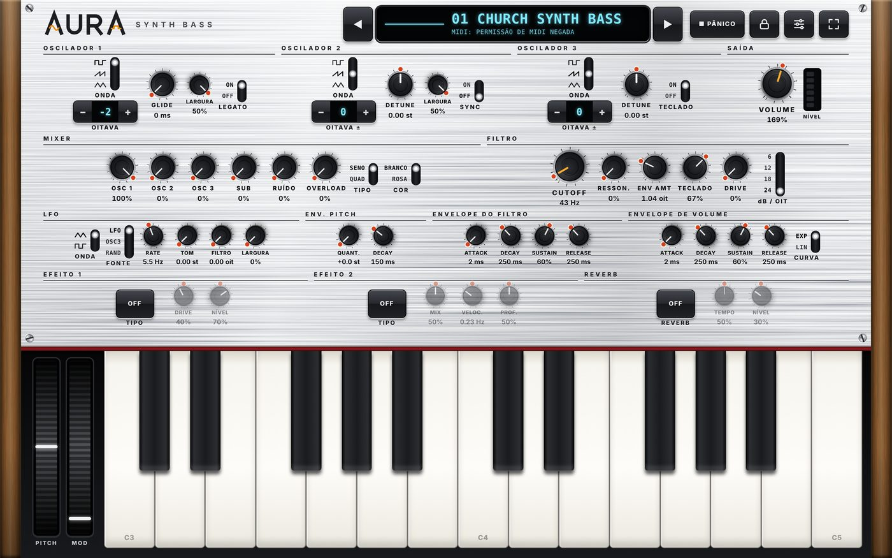
No grupo Som e aparência, toque em Tema para alternar. Os dois temas são idênticos em funções e em posição de cada controle; só muda a cor: escuro (padrão, grafite) é ideal para palco; claro (prateado escovado) favorece telas pouco brilhantes sob sol. A escolha fica salva no aparelho.
13.3 · Grupo Toque
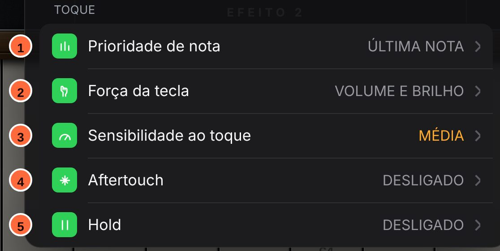
| # | Linha | Opções (toque para alternar) | O que faz |
|---|---|---|---|
| 1 | Prioridade de nota | Última nota · Mais grave · Mais aguda | Como o baixo (monofônico) escolhe a nota quando você segura várias teclas. |
| 2 | Força da tecla | Volume e brilho · Só volume · Só brilho | Para onde vai a intensidade do toque (velocity). |
| 3 | Sensibilidade ao toque | Desligada · Suave · Média · Forte | Quanto a intensidade influencia o som. “Desligada” = sempre o mesmo nível. |
| 4 | Aftertouch | Desligado · Vibrato · Filtro · Volume | O que a pressão extra sobre a tecla controla (se o seu teclado envia aftertouch). |
| 5 | Hold | Ligado · Desligado | Segura as notas como um pedal de sustain, sem soltar. |
13.4 · Grupo Ao vivo
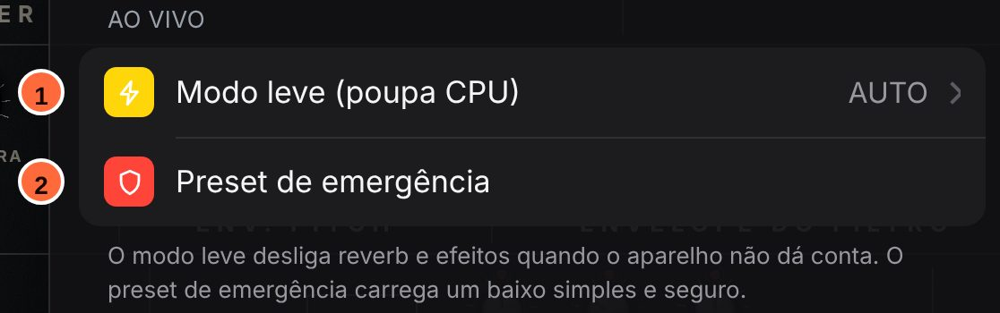
| # | Linha | O que faz |
|---|---|---|
| 1 | Modo leve (poupa CPU) | AUTO / LIGADO / DESLIGADO. Quando o aparelho não dá conta, desliga reverb e efeitos para evitar estalos. AUTO liga sozinho se detectar sobrecarga. |
| 2 | Preset de emergência | Carrega na hora um baixo simples e seguro. Use se um som sair errado no meio da música. |
13.5 · Grupo Controlador
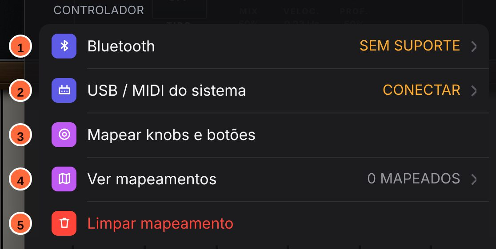
| # | Linha | O que faz |
|---|---|---|
| 1 | Bluetooth | Conecta um controlador BLE-MIDI (Chrome/Edge). Mostra o nome do aparelho ou CONECTAR / SEM SUPORTE. |
| 2 | USB / MIDI do sistema | Procura e conecta controladores USB. Mostra NENHUM, N CONECTADO(S), CONECTAR ou SEM SUPORTE. |
| 3 | Mapear knobs e botões | Liga o modo de aprendizado (capítulo 14). |
| 4 | Ver mapeamentos | Lista quais botões do controlador estão ligados a quais controles. |
| 5 | Limpar mapeamento | Apaga todos os mapeamentos. Linha vermelha: pede confirmação. |
13.2 · Avançado (1/2)
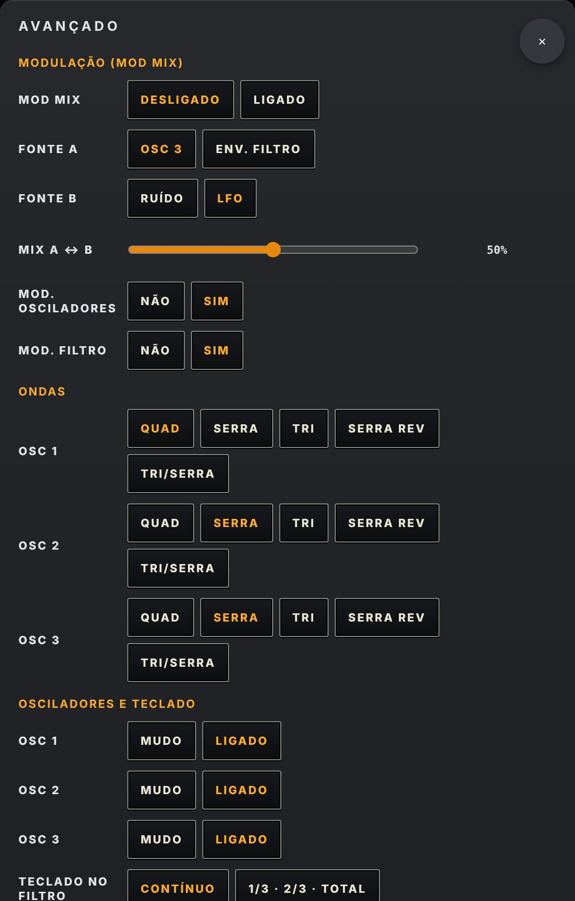
A tela Avançado reúne ajustes finos. O que fica em cada preset: modulação, ondas, osciladores, teclado, filtro, LFO 2 e unísono.
Modulação (Mod Mix)
Mistura duas fontes (A: Osc 3 ou Env. Filtro; B: Ruído ou LFO) e envia o resultado ao pitch dos osciladores e/ou ao filtro.
Ondas
Formas extras para Osc 1, 2 e 3: quadrada, serra, triângulo, serra reversa e triângulo/serra.
Osciladores e teclado
Muda cada oscilador (mudo/ligado) e quanto o teclado controla o cutoff: contínuo, 1/3, 2/3 ou total.
Filtro avançado
Tipo Clássico ou Ácido (diodo de 4 polos). No modo clássico escolha passa-baixa, passa-faixa ou passa-alta. Osc 2 → Filtro (FM) modula o corte pelo Osc 2.
LFO 2
Segundo LFO: velocidade, onda (triângulo, serra, quadrada, S&H), atraso de entrada gradual, reinício a cada tecla e quanto envia ao filtro, ao pitch e à largura de pulso.
13.2 · Avançado (2/2)
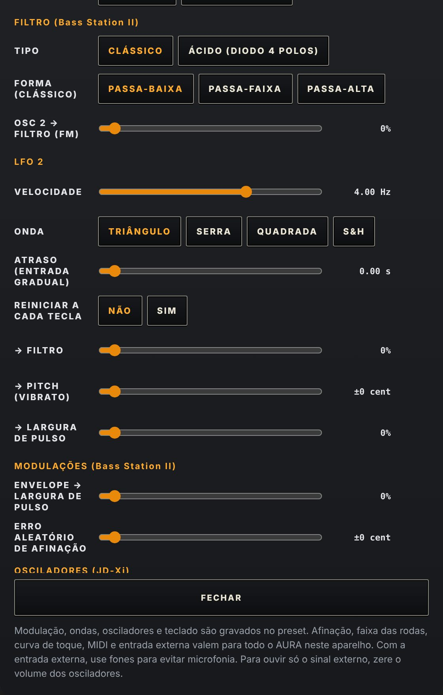
Modulações extras
Envelope → largura de pulso e erro aleatório de afinação (dá o toque “analógico” instável).
Osciladores extras
Anel: multiplica Osc 1 × Osc 2 (som metálico). Uníssono do Osc 1: +1, +2 ou +3 vozes extras com abertura de até ±16 cent.
Afinação
TUNE: ajuste fino em cents. Tom A-440: nota de referência. Erro de tecla e Escala: Igual, Pitagórica, Carlos ou Partch 43.
Controles (valem para o app todo)
Faixa do pitch bend (para cima 2 st / para baixo 12 st), curva de toque (suave, média, dura) e transposição MIDI −12 / 0 / +12.
Entrada de áudio externa
Processa o sinal de entrada (ex.: seu baixo) pelo filtro: ligue, ajuste o nível e escolha o disparo (pelas teclas ou pelo sinal, com limiar). Use fones para evitar microfonia.
Canal MIDI
TODOS (padrão) ou um canal específico.
14 · Mapear controles MIDI
Você pode ligar qualquer botão ou knob físico do controlador a qualquer controle do AURA. O mapeamento fica salvo no aparelho.
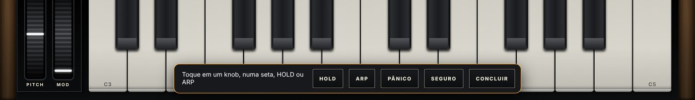
- Ajustes → Mapear knobs e botões.
- Toque no controle do AURA que deseja ligar (um knob, uma seta de preset, HOLD, ARP, PÂNICO ou SEGURO).
- Mexa o botão ou knob físico do controlador. O visor confirma.
- Repita para os demais e toque em Concluir.
| Botão da barra | Função |
|---|---|
| HOLD | Mapeia um botão do controlador para ligar/desligar o Hold |
| ARP | Liga/desliga o arpejador |
| PÂNICO | Silencia tudo |
| SEGURO | Carrega o preset de emergência |
| CONCLUIR | Sai do modo de aprendizado |
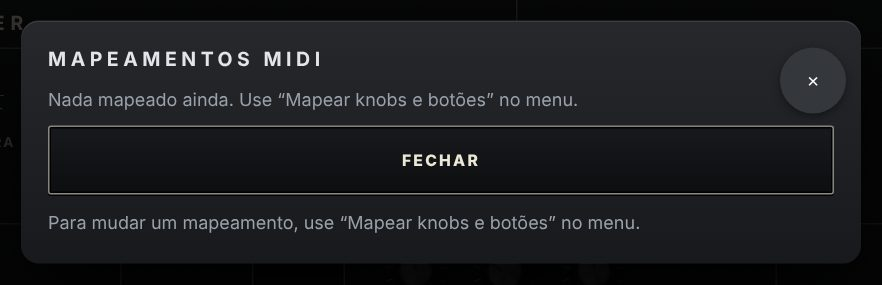
Ver mapeamentos lista o que está ligado. Limpar mapeamento apaga tudo (linha vermelha, pede confirmação).
15 · Tocando ao vivo
Antes do show
- Instale o AURA e abra-o uma vez com internet.
- Monte a setlist na ordem das músicas.
- Mapeie ao controlador: PÂNICO, HOLD e as setas de preset.
- Ative o cadeado e a tela cheia.
- Deixe o Modo leve em AUTO.
Durante o show
- Use as setas ou o Program Change do controlador para trocar de som.
- Nota presa? PÂNICO (ou CC 123).
- Som estranho ou silêncio? Preset de emergência.
- Poucos recursos do aparelho? O modo leve corta reverb e efeitos para proteger o áudio.
| Situação | Solução rápida |
|---|---|
| Toquei sem querer num knob | Toque duplo no knob volta ao valor do preset |
| Perdi a conexão Bluetooth | O app tenta reconectar sozinho e avisa no visor; se falhar, use Ajustes → Bluetooth |
| Estalos no áudio | Modo leve LIGADO; feche outros apps; use cabo/saída de áudio de boa qualidade |
| Quero outro som parecido | Carregue o preset, ajuste e use Salvar como novo |
16 · Receitas de som
Parta do preset 01 Church Synth Bass ou de qualquer um e ajuste só o indicado. Valores são pontos de partida.
| Som | Ajustes |
|---|---|
| Sub grave | Osc 1 −2 oit, quadrada · Sub 60% · Filtro CUTOFF baixo · RESSON. 0 · Env. volume: Attack mínimo, Sustain 100% |
| Pluck curto | Env. volume: Decay ~250 ms, Sustain 0, Release ~120 ms · Env. filtro: Decay ~200 ms, ENV AMT alto, CUTOFF baixo · Env. pitch QUANT. +2 st, DECAY ~40 ms |
| Baixo gordo | Osc 1 −2 oit, Osc 2 −1 oit com detune ±0,05 st · Mixer: Osc 1 100%, Osc 2 60% · Chorus no Efeito 2 (MIX 30%) |
| Lead com glide | Osc 1 e Osc 2 em serra · GLIDE ~80 ms · LEGATO ON · RESSON. 30% · Delay MIX 20% |
| Wah automático | LFO FILTRO ~0,5 oit · RATE ~3 Hz · RESSON. 40% |
| Pad lento | Env. volume: Attack ~600 ms, Release ~800 ms · Reverb ligado (Catedral) |
| Baixo ácido | Avançado → Filtro: Ácido (diodo 4 polos) · RESSON. 60% · ENV AMT alto · Decay curto |
Depois de ajustar, use Ajustes → Salvar preset → Salvar como novo.
17 · Plugin VST3 / AU
O motor do AURA também existe como plugin para o Reaper e outras DAWs. O GitHub Actions do projeto gera AURA-Synth-Bass-macOS.zip (VST3 e AU) e AURA-Synth-Bass-Windows.zip (VST3).
- Baixe o zip na aba Actions do repositório e descompacte.
- macOS: copie o .vst3 para ~/Library/Audio/Plug-Ins/VST3 e o .component para ~/Library/Audio/Plug-Ins/Components.
- Windows: copie o .vst3 para C:\Program Files\Common Files\VST3.
- No Reaper: Preferences → Plug-ins → VST → Re-scan. Em uma faixa, adicione AURA Synth Bass (VSTi).
- Troque presets pelas setas do plugin. Importar e Exportar usam o backup .json do app web — é assim que você leva seus sons do iPad para a DAW.
18 · Solução de problemas
| Sintoma | O que fazer |
|---|---|
| Sem som | Toque na tela uma vez (liberar áudio); confira volume do aparelho, knob VOLUME e o LED POWER (verde). Veja se o mixer tem OSC 1 acima de 0%. |
| Teclado MIDI não responde | Aceite a permissão de MIDI; reconecte o cabo; abra Ajustes → USB / MIDI do sistema. No iPad use um adaptador compatível. |
| Visor mostra “MIDI: permissão negada” | Libere o MIDI nas permissões do site e recarregue a página. |
| Bluetooth “SEM SUPORTE” | Seu navegador não tem Web Bluetooth (Safari). Use Chrome/Edge ou conecte por USB. |
| Nota presa | Toque em PÂNICO (ou CC 123). Verifique se o Hold está desligado. |
| Estalos ou falhas | Ative o Modo leve; desligue reverb/efeitos pesados; feche outros apps. |
| O som ficou estranho | Toque duas vezes nos knobs ou carregue o preset de novo; em último caso use o Preset de emergência. |
| Sem efeitos na tela | Em telas pequenas a fileira de efeitos fica oculta: use Ajustes → Efeitos. |
| Diálogos apertados no celular | Use o celular na horizontal ou um tablet. |
| App antigo após atualização | Feche o app por completo e abra de novo para carregar o novo cache. |
| Perdi meus presets | Se você tinha feito backup, use Importar arquivos. Entrar na Nuvem também recupera os presets salvos. |
19 · Glossário
| Termo | Significado |
|---|---|
| Attack/Decay/Sustain/Release | Fases de um envelope |
| BPM | Batidas por minuto |
| Cents / semitons | Medidas de afinação: 100 cents = 1 semitom |
| Cutoff | Frequência de corte do filtro |
| CC | Control Change: mensagem MIDI de botão/knob |
| DAW | Programa de gravação (Reaper, Logic…) |
| Detune | Desafinação intencional entre osciladores |
| Drive | Saturação |
| Glide | Deslize entre notas |
| Hold | Segura as notas (sustain) |
| Termo | Significado |
|---|---|
| LFO | Oscilador lento que modula outro parâmetro |
| Legato | Notas ligadas sem retocar o ataque |
| MIDI | Protocolo de comunicação entre instrumentos |
| Monofônico | Toca uma nota por vez |
| Pitch bend | Roda que dobra a afinação |
| Preset | Som salvo |
| Release | Tempo de apagar após soltar a tecla |
| Ressonância | Realce no ponto de corte do filtro |
| Setlist | Lista de presets para o show |
| Velocity | Intensidade do toque na tecla |
Criado por Thiago R. Galvão · © 2026 · Todos os direitos reservados
Este manual acompanha o app e o plugin; as telas podem variar levemente entre versões.